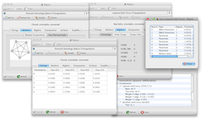
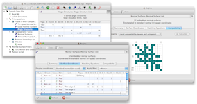
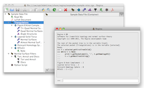

12 September 2011: Version 4.90 is out, and it's been a long time coming! If you were at the HyamFest, this is the version you saw in the software demonstration.
Regina is now built upon KDE 4. This means you can finally install Regina on newer GNU/Linux distributions, and MacOS X users will find a much more native look-and-feel. There are many other changes in this release (two years' worth!), and you can read the highlights here.
The user interface has undergone a massive renovation, so please please contact us regarding anything that doesn't work (or, hopefully, to let us know that everything does!).
As usual, packages are available in the download section for GNU/Linux and MacOS X.
Other highlights of Regina include angle structures, census enumeration, combinatorial recognition of triangulations, and high-level tasks such as 3-sphere recognition and connected sum decomposition. Regina comes with a full graphical user interface, and also offers Python bindings and a low-level C++ programming interface.
See the users' handbook for a full list of features.
|  | Studying 3-manifold triangulations |
|  | Normal surfaces and angle structures |
|  | In-built Python scripting |
To keep the installation simple, most packages do not include the MPI (high-performance computing) utilities. If you need these, let Ben know and he can build you an MPI-enabled package.
Distribution Version 32-bit package (i386 or i586) 64-bit package (amd64 or x86_64) Debian 6.0 (squeeze) Download Download unstable (sid) Download Download Fedora 15 Download Download 14 Download Download Fink / MacOS X 10.5 / 10.6 Instructions, Info File Mandriva 2011.0 Download Download 2010.2 Download Download SuSE 11.4 Download Download 11.3 Download Download Ubuntu 11.04 (natty) Download Download 10.10 (maverick) Download Download 10.04 LTS (lucid) Download Download
If your system is not in this table, you will need to build Regina from source. You can download the source code here. Please see the separate page on building Regina for instructions on how to build Regina and what libraries and tools you will need to have installed.
If you run into any problems when you run Regina, you can check the troubleshooting page to see if your problem is discussed there. You also most welcome to contact us for help.
You can read the handbook from within Regina by selecting Help → Regina Handbook from the menu. You can also read it here online, or download it separately in HTML format.
You can read the API documentation by selecting Help → Python API Reference from the menu. You can also read it here online.
There are other mailing lists for user support and development; click here for details.
Many others have been of assistance with this project, be it through time, knowledge, testing or code. Please see the full list of acknowledgements in the users' handbook.
Benjamin A. Burton, Ryan Budney, William Pettersson, et al.,
Regina: Software for 3-manifold topology and normal surface theory,
http://regina.sourceforge.net/, 1999–2011.
This program is free software; you can redistribute it and/or modify it under the terms of the GNU General Public License as published by the Free Software Foundation; either version 2 of the License, or (at your option) any later version.
This program is distributed in the hope that it will be useful, but WITHOUT ANY WARRANTY; without even the implied warranty of MERCHANTABILITY or FITNESS FOR A PARTICULAR PURPOSE. See the GNU General Public License for more details.
You should have received a copy of the GNU General Public License along with this program; if not, write to the Free Software Foundation, Inc., 51 Franklin St, Fifth Floor, Boston, MA 02110-1301, USA.
For complete license details, including the full GNU General Public License and information on external software that Regina uses, see the full license in the users' handbook.
If you have written your own extensions that you think could be worth putting in the main release, please do write and let us know.
Even if you have no comments to make, it's always nice to hear from people using Regina, even if it's just to say hi. We're always interested to hear how this software is being used.
You can contact us by email: the best address is regina-user@lists.sourceforge.net, which will reach all of the developers. Of course you are also welcome to send us personal emails: our websites are linked to our names in the author list above.
{kind=link}
{kind=link}
{kind=link}